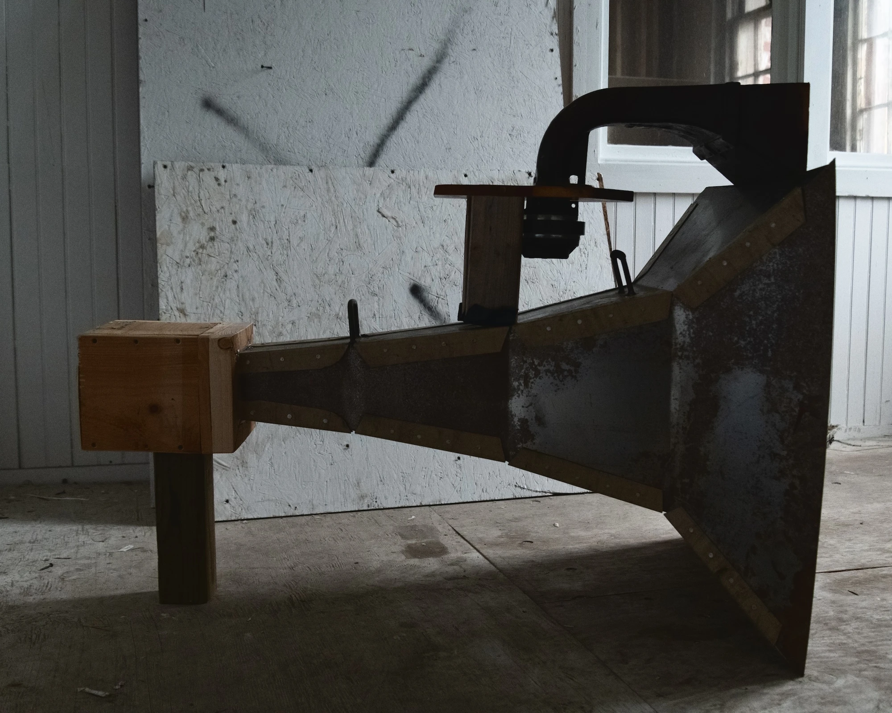
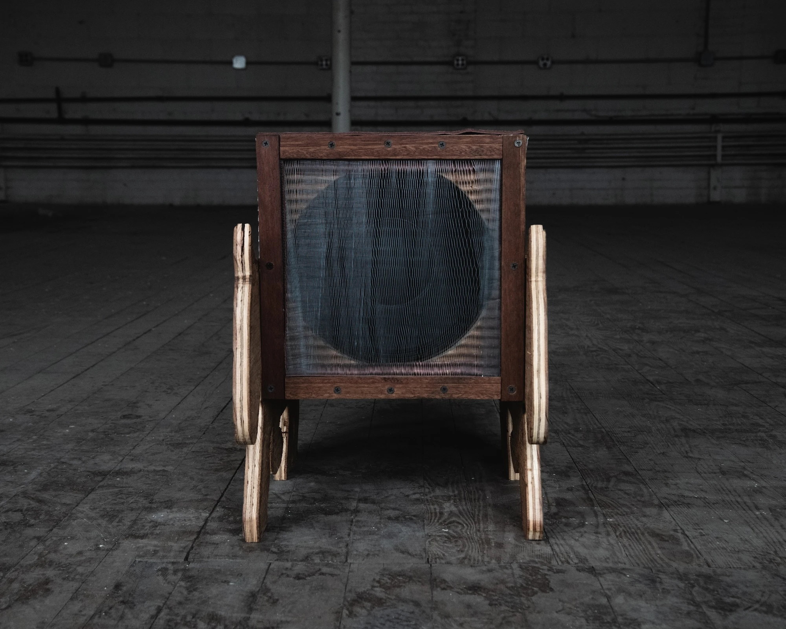
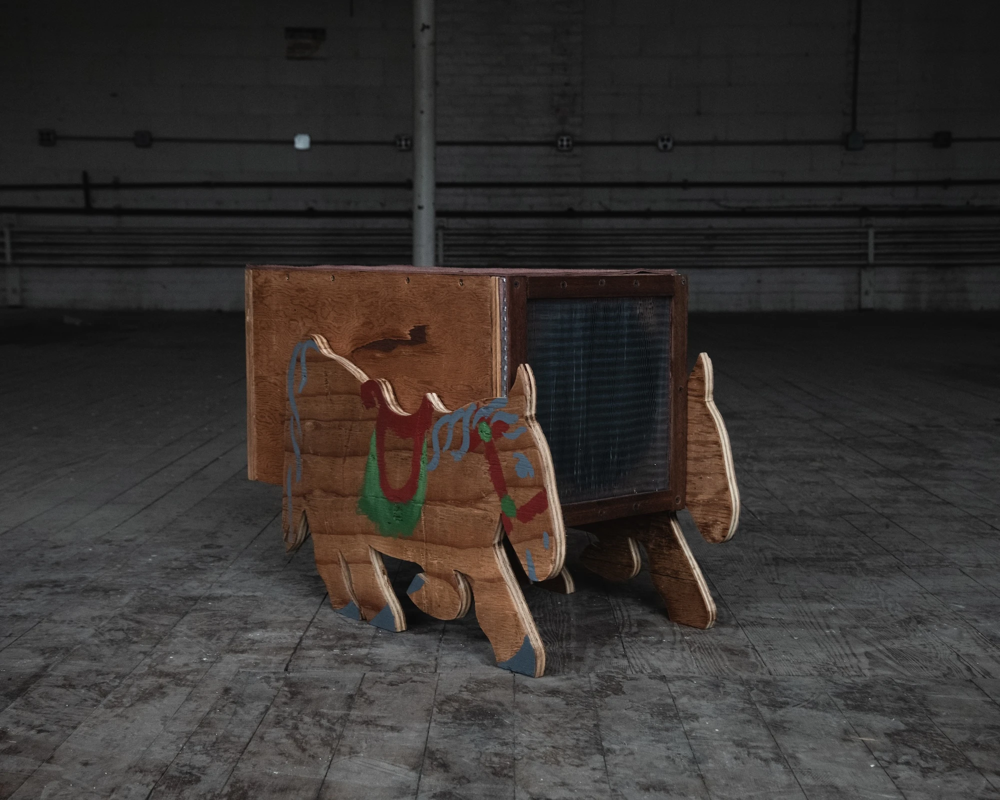

Speakers, Horns and Amplifiers!

Exponential Horn
steel, plywood, 6in full range driver, aluminum rivets, silicon, banana binding posts, speaker wire, fiberglass insulation, steel mesh, drywall screws, leather.
This is an exponential speaker horn I build with Enid Corcoran for my architecture class titled Urban Metabolism. This speaker is meant to amplify mid range frequencies from an driver at the throat of the horn, specifically the sound of water rushing though the moshassuck river. The driver is 6 inches at the base of the throat. I have been using a special cable with a 60uf capacitor at around 600hz to protect the driver from bass frequencies that might blow it. The back is enclosed and ported, with fiberglass insulation to absorb the back reflections and silicon to ensure a tight seal at the base of the throat, where its 4x4 inches.
I harvested compression drivers from old PA's from the Firehouse that I connected to a horn I found at Cold Spring Hollow, for the high frequencies. I made a temporary mount to sit on top of the exponential horn, and I've been using a 23uF capacitor for a high pass filter around 1150hz to protect the compression driver and make the duo more efficient.


Ponyville Sound System Subwoofer
plywood, danish oil, 10in subwoofer driver (dayton audio), aluminum mesh, speaker wire, fiberglass insulation, drywall screws (steel and brass), banana binding posts, acrylic paint, mahogany.
This is the second speaker me and Enid have built. It has no crossover, but is to be used as a subwoofer or mid range speaker. Its a closed enclosure design.
